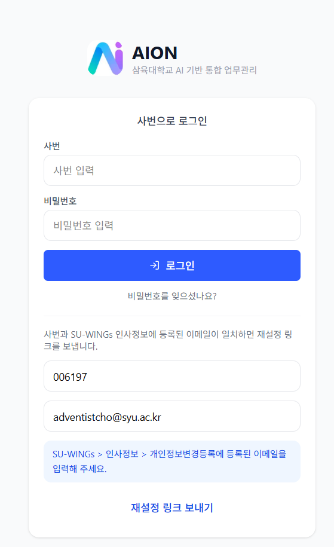
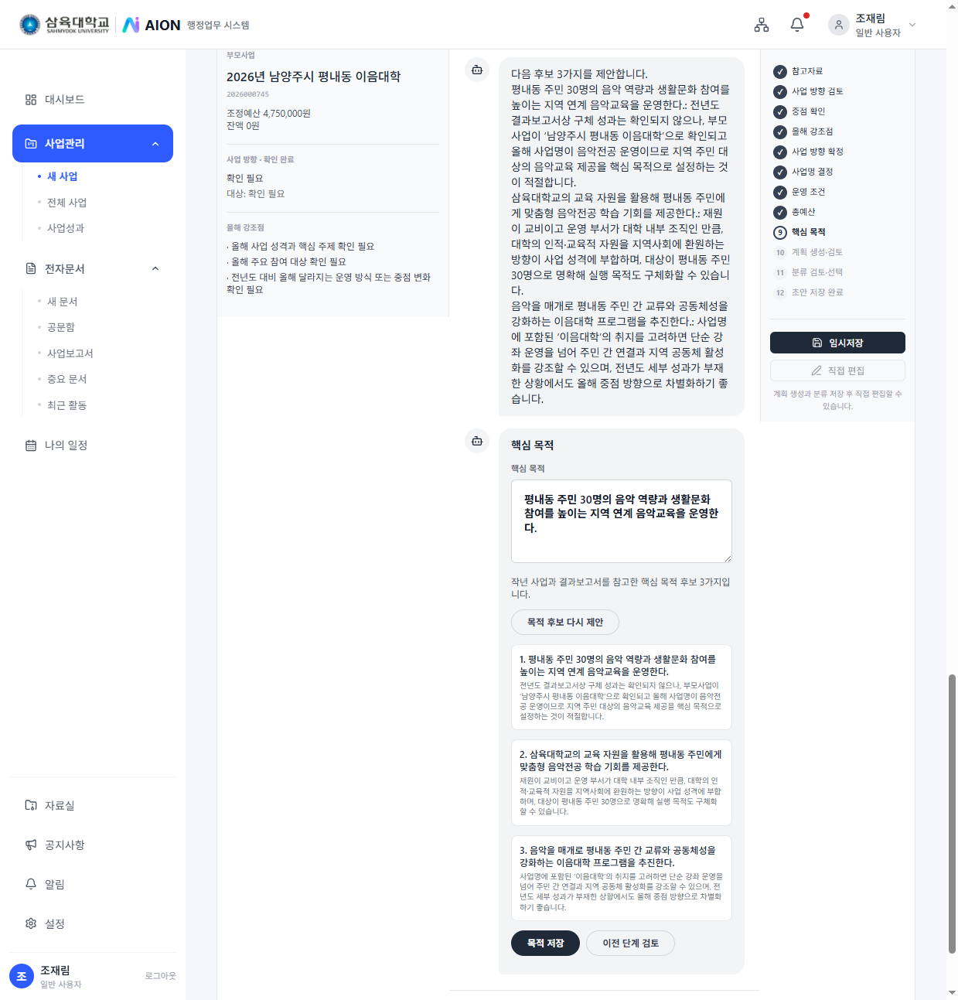
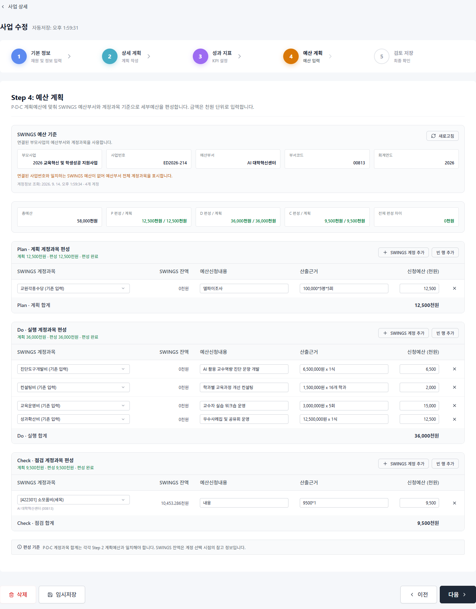
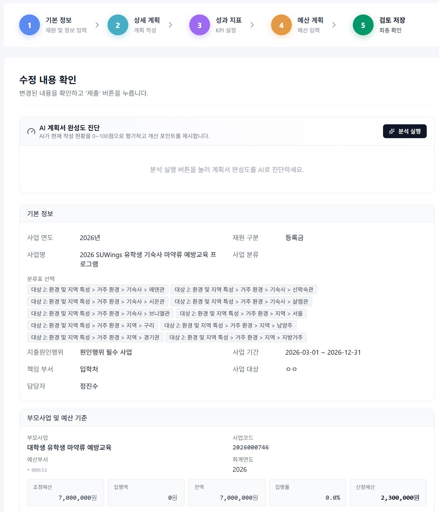

AION Briefing Session · 개정 v2
AION 통합 성과관리 체계
설명회 개정안
부서 담당자 피드백을 반영했습니다. PDC는 원인행위 · 실행계획 · 결과보고로 단순화하고,
사업분류(C1~C5)는 내용을 쓴 뒤 AI 초안을 고치는 방식으로 바꿉니다.
대상 · 사업담당자 전체
개정 · PDC 단순화 · 분류 후순위
[발표일자] · [발표자명]
주관 · 기획처
PART 1
왜 지금 이 시스템인가
외부 환경의 구조적 위기
내부 관리체계의 모순
실무에서 겪는 문제 3가지
무엇이 바뀌는가
PART 1 · 필요성
AION 통합 성과관리 체계
지금 대학은 이중고에 직면해 있습니다
외부에서 오는 구조적 위기와, 내부의 관행적 비효율이 동시에 커지고 있습니다.
외외부 환경의 구조적 위기
- 학령인구 감소가 실질적 재정 타격으로 이어짐
- 교육부, 2027학년부터 지방 국립대 신입생 등록금 0원(전액 장학금) 추진 — 사립대 신입생 유치 경쟁 심화
- 교육부 재정위기대학 관리 본격 시행 (2026.8.15)
— 구조조정·통폐합을 전제로 한 국가 차원의 조치
- 평가 패러다임 전환: 예산 집행률 → 핵심지표 달성도·환류(PDCA)
- 중장기 발전계획과 예산의 연계를 데이터로 증명하지 못하면 외부 재원 수주 불가
내내부 관리체계의 모순
- "전년도 진행 사업"이라는 이유로 반복되는 항례적 예산 배정
- 사업 실적과 성과지표의 인과관계 단절 — 추적·검증 불가
- 교비·국비·지자체 재원별 분절 관리 → 중복투자·투자 사각지대
- 하나의 예산사업을 여러 세부사업으로 쪼개는 중층구조 만연 → 전용·혼용, 책임 소재 불분명
결론. 관행적 예산 집행과 파편화된 사업 운영으로는 지속 가능성을 담보할 수 없습니다. 데이터·지표 기반의 사업계획과 합목적성에 입각한 예산관리로의 전환이 시급합니다.
PART 1 · 필요성
AION 통합 성과관리 체계
실무에서 실제로 겪는 문제 3가지
사업담당자가 매년 사업계획을 쓸 때 반복적으로 마주치는 현실입니다.
1타당성 검토 부재
사업의 효과성·수요자 중심성·지표 연관성을 따지지 않고, "작년에도 했으니까" 관행적으로 예산을 신청합니다.
→ 내용적 타당성이 아니라 예산액 규모 중심의 단편적 검토만 반복
2사업–지표 인과관계 단절
사업은 사업대로, 지표는 지표대로 겉돕니다. 이 사업이 어떤 지표에 얼마나 기여했는지 추적할 데이터가 없습니다.
→ 사후 검증조차 어려운 구조적 모순
3중층 사업구조
하나의 예산사업 안에 여러 세부사업을 임의로 쪼개 운영하면서 예산 전용·혼용이 심해집니다.
→ 승인받은 사업의 목적이 흐려지고 책임 소재가 사라짐
세 문제는 서로 연결되어 있습니다. 사업계획을 쓰는 시점에 지표·목표·예산을 함께 확정하지 않으면, 이후 평가·성과관리 단계에서는 되돌릴 수 없습니다.
그래서, 무엇이 바뀌나
이제부터 사업계획을 작성할 때
추진계획 · 성과지표 · 예산을
반드시 함께 입력합니다.
BEFORE
예산액 규모 중심 검토
사업과 지표를 각각 따로 관리
세부사업 임의 분할·전용
AFTER · AION
사업–지표 인과관계 필수 입력
대내외 지표를 통합 DB로 일원화
부모–자녀 예산 구조로 목적 명확화
PART 2
시스템의 목적과 개요
이 시스템이 해결하려는 것 5가지
AION의 위치 — 무엇을 대체하지 않는가
PART 2 · 목적·개요
AION 통합 성과관리 체계
이 시스템의 목적 5가지
앞서 본 필요성에 따라, AION 사업관리 체계는 다음 5가지를 실현하도록 설계되었습니다.
1
사업–지표 인과관계 연결
사업계획 작성 시 성과지표와 목표값을 반드시 함께 등록
2
대내외 지표 통합 DB
중장기발전계획 12개 지수, 기관평가인증 4개 영역 및 국고사업성과관리지표 등을 하나로
3
직접·연계 이원화 등록
사업의 목적과 산출물을 사전에 명확히 구분
4
타당성 자기점검
산출식·기준값·전년 실적과 목표값을 비교하며 스스로 검토
5
AI 활용 기반 마련
축적 데이터로 AI 초안·성과 대시보드·환류 체계 구축
종합. 관행적인 중층 사업구조를 해체하고, 데이터 기반의 사업기획과 합목적성에 부합하는 투명한 예산관리로 체질을 개선하는 것이 최종 목적입니다.
PART 2 · 목적·개요
AION 통합 성과관리 체계
AION은 무엇을 대체하지 않는가
AION은 예산 시스템(SU-WINGS)과 결재 시스템(그룹웨어)을 대체하지 않고 연결합니다.
예산 정보가 다르면 기준은 항상 SU-WINGS
*신규부모사업의 경우 예산팀에 공문발송을 통해 신설필요
결재는 그룹웨어에서 진행 → 결과가 AION에 반영
*현재 연동준비 중이며, 예산신청, 사업계획 수정 및 향후 모든 공문에 대한 작성가능예정
지출청구 자체는 AION의 범위가 아님
* 예산 신청에 따른 지출청구 기능 확대 예정
PART 3
사업관리 구조
전체 구조 4층위
부모사업 ↔ 자녀사업
성과지표 이원화 로직
PART 3 · 사업관리 구조
AION 통합 성과관리 체계
사업관리 구조, 한눈에 보기
4개 층위가 순서대로, 그리고 순환하며 맞물려 작동합니다.
1
예산 연동 구조부모(SU-WINGS)–자녀(AION)→
→
→
왜 이렇게 설계했나
- 부모–자녀 구조로 예산 중층화를 원천 차단
- 5단계 순서로 목적 → 방법 → 지표 → 예산이 자연히 연결
- 직접/연계 구분으로 사업의 목적성을 사전에 명확화
- PDCA 순환으로 성과가 다음 계획에 재투입되는 환류 체계 확보
오늘 설명 순서
- 이어지는 두 장에서 ①부모–자녀 구조와 ③지표 이원화 로직을 조금 더 자세히
- 그다음 PART 4 사용방법에서 실제 화면으로 5단계를 처음부터 끝까지 따라갑니다
PART 3 · 사업관리 구조
AION 통합 성과관리 체계
부모–자녀 구조로 예산 중층화를 원천 차단
부모사업 ↔ 자녀사업 — 가장 헷갈리기 쉬운 개념
AION에서 만드는 실행 사업(자녀사업)은 SU-WINGS 예산 사업(부모사업) 하나에 반드시 연결됩니다.
SU-WINGS 예산 사업 (부모)
2026000746
대학생 유학생 마약류 예방교육
◀ 연결
자녀사업 A — 유학생 대상 예방교육 운영
자녀사업 B — 예방교육 콘텐츠 개발
자녀사업 C — 캠퍼스 안전문화 캠페인
중요. 자녀사업 총액의 합계 = 부모사업(SU-WINGS) 예산입니다. 총액은 Step2에서 P/D/C 각 한 칸으로, Step4에서 계정과목으로 쪼갭니다. 세부사업 예산을 느슨하게 쓰면 부모사업 전체가 흔들립니다.
PART 3 · 사업관리 구조
AION 통합 성과관리 체계
직접/연계 구분으로 사업의 목적성을 사전에 명확화
성과지표 이원화 로직
모든 사업은 성과지표 등록 시, 딱 한 번 아래 질문에 답하면 됩니다.
이 사업이 대내외 성과관리 지수에 직접 기여하는가?
↙ ↘
YES → 평가/성과관리지표
등록 방식에서 왼쪽 카드 선택 → 성과관리지수 드롭다운 → 지표명 · 단위 · 목표값 입력
NO → 연계지표
등록 방식에서 오른쪽 카드 선택 → 연계 성과체계(내부/외부) 선택 → 지표명 · 단위 · 목표값 · 연계 설명
주의. 평가/성과관리지표로 이미 올린 내용을 연계지표에 중복 등록하지 마세요. 간접 서포트가 분명하지 않으면 등록하지 않아도 됩니다.
PART 4
사용방법
지금부터는 실제 AION 화면을 그대로 보면서, 사업계획을 처음부터 제출까지 따라가 봅니다.
로그인 · 비밀번호 재설정 · 대시보드 · 작성방식
위자드 ①부모사업 → ②사업명 → ③조건 → ④예산 → ⑤목적 → ⑥AI생성 → ⑦편집전환
Step1~4 작성 후 AI 분류 초안 → 담당자 수정 · 제출
제출 → 내부공문(기획처)
PART 4 · 사용방법
AION 통합 성과관리 체계
사업계획서는 이 5단계로 작성합니다
분류는 1단계가 아닙니다. 내용을 쓴 뒤 AI가 초안을 만들고, 담당자가 마지막에 고칩니다.
1 기본 정보재원 · 기간 · 부서
2 상세 계획개요 · 목적 · PDC
3 성과 지표직접 · 연계 KPI
4 예산 계획P/D/C 각 한 칸
5 분류·제출AI 분류 초안 → 제출
A시작하기
로그인 → 대시보드 → 새 사업 → 작성 방식 선택(보통 AI 위자드)
B위자드 → 작성
부모사업·사업명·조건·예산·목적 → AI초안 → Step1~4에서 PDC·지표·예산을 검수
C분류 후 제출
AI가 C1~C5 초안을 채움 → 담당자 수정 → 제출 → 내부공문(기획처)
임시저장 ≠ 제출. 임시저장은 중간 저장일 뿐입니다. 제출해야 승인용 내부공문(기획처) 흐름으로 넘어갑니다.
PART 4 · 사용방법
STEP 0 · 로그인
① 로그인 — 그룹웨어와 동일한 사번·비밀번호
브라우저에서 https://suai.cloud로 접속하면 로그인 화면이 열립니다.
실제 화면 · 로그인

- 1주소창에 https://suai.cloud 입력
- 2사번 입력 — 그룹웨어 계정과 동일합니다
- 3비밀번호 입력
- 4파란색 [로그인] 클릭 → 대시보드로 이동
이럴 때는
- 로그인 실패 시 사번·비밀번호를 다시 확인하세요.
- 비밀번호를 잊으면 다음 장 재설정 5단계를 따라가세요.
- 계정 문의는 그룹웨어 계정 담당 부서로 문의합니다.
PART 4 · 사용방법
STEP 0 · 비밀번호 재설정
비밀번호를 잊었을 때 — 재설정 링크로 받기
로그인 화면에서 「비밀번호를 잊으셨나요?」를 누르면, SU-WINGS 인사정보에 등록된 메일로 링크가 갑니다.
- 1AION에서 비밀번호를 잊으셨나요? 클릭
- 2사번·이메일을 넣고 재설정 링크 보내기
- 3메일에서 비밀번호 재설정하기 클릭
- 4새 비밀번호를 설정 (8자 이상)
- 5AION으로 돌아가 로그인
이메일은 SU-WINGS → 인사정보 → 개인정보변경등록에 등록된 주소여야 합니다. 링크는 제한 시간 안에 한 번만 사용할 수 있습니다.
메일이 안 오면
- 사번과 이메일이 SU-WINGS 인사정보와 같은지 확인하세요.
- 스팸함도 함께 확인하세요. 발신: no-reply@suai.cloud
1~2 · 재설정 요청

PART 4 · 사용방법
STEP 0 · 대시보드
② 대시보드 — 내 업무를 한눈에, 여기서 시작
로그인하면 담당사업·집행률·결재대기·일정이 한 화면에 보입니다. 새 사업은 좌측 사업관리 메뉴에서 시작합니다.
실제 화면 · 대시보드

상단 요약 카드
- 담당 사업 · 집행률 · 결재 대기 · 마감 임박 건수
주요 영역
- AI today 브리핑 — 오늘 처리할 업무 요약
- 일정 캘린더 — 업무일정 / 학사일정
- 사업현황 — 내가 맡은 사업과 진행 단계(계획 0% 등)
- 성과관리 — 실적 입력률·예산 집행률, 중점관리 대표사업
새 사업: 좌측 메뉴 사업관리 → 새 사업
PART 4 · 사용방법
STEP 0 · 작성 방식
③ 작성 방식 선택 — 세 가지 중 하나만 고르면 됩니다
처음이거나 초안이 없다면 AI 사업기획 위자드를 권장합니다.
실제 화면 · 작성 방식 선택

1 AI 사업기획 위자드 (추천)
사업 내용이 아직 정리되지 않았을 때. AI와 대화하며 부모사업·사업명·조건·예산·목적을 채운 뒤 5단계 편집화면으로 넘어갑니다. 분류는 맨 마지막입니다.
2 직접 작성
이미 사업계획 문구·예산·KPI가 정리되어 있을 때. 바로 5단계 양식으로 진입합니다.
3 기존 사업 불러오기
작년·유사 사업을 복사해 고칠 때. 연차사업에 유리합니다.
PART 4 · 사용방법
개정 · 위자드 순서
④ 위자드 — 분류는 맨 마지막에 합니다
예전에는 C1~C5를 고르기 전에는 다음으로 가지 못했습니다. 개정안에서는 내용을 먼저 쓰고, AI가 분류 초안을 채운 뒤 담당자가 고칩니다.
기존
① 분류 C1~C5 → ② 부모사업 → … → 작성. 분류가 입구를 막습니다.
개정
① 부모사업부터 작성 → PDC · 지표 · 예산 → AI 분류 초안 → 담당자 수정 · 확정.
C1~C5 체계는 그대로입니다. 바꾸는 것은 언제, 누가 초안을 만드느냐입니다. 상세 항목은 뒤쪽 「분류 확정」 장에서 봅니다.
PART 4 · 사용방법
위자드 1단계 · 부모사업
⑤ 부모사업 연결 — 위자드에서 가장 먼저 하는 일
SU-WINGS 예산사업을 검색해 하나 선택합니다. 자녀 사업은 부모 사업 하나에만 연결됩니다.
실제 화면 · 부모 사업 선택

- 1검색창에 사업명 또는 사업코드 입력
- 2목록에서 해당 예산사업 체크
- 3우측 하단 [선택] 클릭 → "선택 완료" 카드 표시
- 4잘못 골랐으면 카드 옆 [수정]으로 다시 선택
왜 필요한가. 부모사업을 연결해야 편성액·집행액·잔액을 이 사업에서 볼 수 있습니다. 예산의 최종 기준은 항상 SU-WINGS입니다.
PART 4 · 사용방법
위자드 2단계 · 사업명
⑥ 사업명 정하기 — 제안 선택 또는 직접 입력
부모사업 선택 직후, AI가 사업명을 고르거나 직접 입력하라고 안내합니다.
실제 화면 · 위자드 사업명

- 1AI 안내: 「사업명을 선택하거나 직접 입력해 주세요.」
- 2제안된 이름 카드를 고르거나, 입력칸에 직접 작성 후 [전송]
- 3부모사업명과 같게 쓰거나, 실행 단위에 맞게 더 구체적인 이름으로 바꿀 수 있습니다
- 4확정 후 바꾸려면 카드 옆 [수정]
예시
부모와 동일: 「(국고)대학 박물관 진흥지원 사업」
실행명으로 바꾸기: 「AI 기반 대학 연구단지 모델 구축 및 운영」
PART 4 · 사용방법
위자드 3단계 · 사업 조건
⑦ 사업 조건 설정 — 재원·부서·기간·원인행위·대상
사업명이 끝나면 회색 박스에서 기본 조건을 입력합니다. 이후 Step1에도 그대로 반영됩니다.
재원 구분 *
등록금(교비), 국고, 지자체 등
실제 화면 · 조건 입력 폼

입력 후 요약 카드

중요. 지출원인행위 구분은 선택하신 내용을 참고하여 규정에 따라 기획처에서 수정될 수 있습니다. 또한 재원 구분의 경우에도 조정과정을 통해 수정될 수 있습니다.
PART 4 · 사용방법
위자드 4단계 · 예산 규모
⑧ 예산 규모 선택 — AI 제안 카드 또는 직접 입력
여기서는 이 자녀사업의 총액만 잡습니다. 이후 Step2에서 P / D / C 각 한 칸으로 나누고, Step4에서 계정과목으로 쪼갭니다.
실제 화면 · 예산 규모 제안

- 1AI가 제안한 카드 중 선택
보수적 · 표준 · 적극적 · 최대
- 2마음에 안 들면 [다시 제안받기]
- 3카드에 없는 금액이면 [직접 입력]
흐름. 자녀 총액(여기) → Step2에서 P·D·C 각 한 칸 배정 → Step4 계정과목 산출내역 → 자녀 합계 = 부모사업(SU-WINGS) 예산. 단위는 천원입니다.
예시
보수적 2,000만 / 표준 4,000만 / 적극적 7,000만 / 최대 1억 중 선택
PART 4 · 사용방법
위자드 5~6단계 · 목적 · AI생성
⑨ 목적·방향 입력 → AI 계획서 초안 생성
핵심 목적과 연차사업 여부를 답한 뒤 [AI 계획서 생성 시작]을 누르면, 개요·추진계획·성과지표·예산 초안이 만들어집니다.
실제 화면 · 목적 입력 · AI 생성

- 6목적·방향 — AI 제안 중 고르거나 직접 입력
연차사업 여부도 함께 답합니다
- 7[AI 계획서 생성 시작] 클릭
개요 · 추진계획 · 성과지표 · 예산 초안이 생성됩니다
- 8생성이 끝나면 5단계 편집 화면으로 전환됩니다
AI는 초안입니다. 사업명·KPI·예산·본문은 담당자가 반드시 확인·수정한 뒤 제출하세요.
PART 4 · 사용방법
위자드 7단계 · 편집 전환
⑩ 편집 전환 — 이제부터는 5단계 계획서 화면
위자드에서 채운 값이 Step1~5에 미리 들어가 있습니다. 지금부터는 검수·보완이 본업입니다.
실제 화면 · 5단계 진행바 (Step1 활성)

위자드 → 5단계로 이어지는 흐름
- ①부모사업 ~ ⑥AI생성까지 끝 → ⑦편집 전환
- 화면 상단에 1기본정보 → 2상세계획 → 3성과지표 → 4예산 → 5검토제출 진행바 표시
여기서 하는 일
- 확인 — 부모사업·사업명·기간·부서·원인행위가 위자드 입력과 같은지 (분류는 아직 비워 둡니다)
- 수정 — 틀린 값·빠진 값 고치기
- 임시저장 — 중간 저장 (아직 제출 아님)
- 다음 > — Step2 상세계획으로 이동
위자드 중간에서도 오른쪽 [직접 편집]으로 이 화면으로 바로 올 수 있습니다.
PART 4 · 사용방법
STEP 1 · 기본 정보
Step 1. 기본 정보 — 위자드 값을 검수·확정
위자드에서 고른 사업명·재원·기간·부서 등이 자동으로 채워져 있습니다. 분류(C1~C5)는 아직 비워 두고, 틀린 값·빠진 값만 고치면 됩니다.
실제 화면 · Step1 기본 정보

확인·입력 항목
- 선택된 분류 — 개정안에서는 비워 둡니다. 뒤쪽 「AI 분류 초안」에서 채웁니다
- 사업명 * — [AI 제안] 버튼 활용 가능
- 사업 연도 / 재원 구분 * — 예: 2026년 / 지자체(혁신지원)
- 시작일 / 종료일 *
- 책임 부서 * · 사업 대상 *
- 지출원인행위 구분 * — 원인행위 필수 / 고정비(의무지출)
- 주담당자 및 부담당자 입력
연차사업 여부를 체크하고 환류 대상 사업을 선택하면, 전년도 미흡요인·성과지표 참고자료가 자동 연동됩니다.
PART 4 · 사용방법
STEP 2 · 상세 계획
Step 2. 상세 계획 — 개요 · 목적 · 추진 방법
AI가 만든 초안이 들어와 있는 경우가 많습니다. 반드시 읽고 검수한 뒤 넘어가세요.
실제 화면 · Step2 상세 계획

사업 개요 *
누가·무엇을·언제·어떻게 하는 사업인지 전체 그림. 추진 배경·필요성도 함께 작성합니다. (2~4문단)
사업 목적 *
"왜"가 아니라 무엇을 이룰지. 이 사업으로 달성하려는 상태를 작성합니다.
추진 방법 *
어떻게 실행할지(방식·절차·협업). AI가 비워두는 경우가 많으니 직접 작성해야 합니다.
오른쪽 [AI 제안]으로 초안을 받을 수 있지만, 받은 뒤 반드시 검수하세요.
PART 4 · 사용방법
STEP 2 · 추진계획(PDC)
Step 2. P는 원인행위, D는 세세한 실행, C는 결과보고 개정
D 내용은 여러 행으로 자세히 씁니다. 바꾸는 것은 예산입니다. 줄마다 금액을 넣지 않고 P 하나 · D 하나 · C 하나만 잡습니다.
P원인행위만
500만 원 기준 · 위원회 또는 부서 내부기안
D본 사업 계획 (세세히)
원인행위 이후 홍보·운영·보고회·세금·인건비·청구를 행으로 나눔
A환류는 C에
별도 행을 두지 않고 결과보고에 포함
P 배정 (한 칸)
원인행위
기안·위원회 관련 비용이 있으면 여기에만
D 배정 (한 칸)
실행
홍보·운영·지급·청구 등 본 사업비
C 배정 (한 칸)
결과보고
필요 시. 없으면 0천원
규칙. P 배정 + D 배정 + C 배정 = 총예산. 행마다 금액을 나누지 않습니다. 단위는 천원입니다.
PART 4 · 사용방법
STEP 2 · P 원인행위
P — 원인행위만 작성합니다
요구조사·설계·입찰을 여러 행으로 쪼개지 않습니다. 이 사업을 집행하기 위한 기안·위원회만 적습니다.
원인행위 경로 (사업 총액, 원 단위)
- 500만 원 이상 (5,000천원) → 위원회
- 500만 원 미만
- 학생 행사 등 주요 안건 → 위원회
- 그 외 → 부서 내부기안 필수
P 칸에 적을 것
- 위원회 / 부서 내부기안 중 어느 경로인지
- 안건명 · 예상 상정 시기
- P 예산 한 칸 (없으면 0천원)
지출원인행위 구분은 담당자 선택을 참고하되, 규정에 따라 기획처에서 조정될 수 있습니다.
PART 4 · 사용방법
STEP 2 · D·C
D는 본 사업을 세세히, C는 종료 후 2주 결과보고
원인행위(P)가 끝나면 부서가 D에서 실행 계획을 행으로 나눠 적습니다. D 행이 많아도 D 예산은 한 칸입니다.
D 행을 나눠 넣을 것
- 사업 홍보 — 대상, 채널, 시기
- 운영 — 일정, 장소, 인력, 진행 방식
- 결과보고회 — 개최 여부·시기
- 세금 납부 — 해당 시 원천세 등
- 인건비 지급 — 해당 시 대상·시기
- 청구 — SU-WINGS·그룹웨어 지출 청구 시점
- 필요하면 + 활동 행 추가로 더 쪼갭니다
C 결과보고서만
- 만족도·KPI·검수를 미리 여러 행으로 쪼개지 않습니다
- 결과보고서 작성이 C의 할 일
- 기한: 사업 종료 후 2주 이내
- 환류·차년도 시사점도 C에 함께 적습니다
- C 예산은 필요 시 한 칸, 없으면 0천원
D 행은 여러 개여도 됩니다. 금액만 홍보 6 + 구축 28처럼 줄마다 나누지 않고, P 0 · D 50 · C 0처럼 구역당 하나씩 맞춥니다.
PART 4 · 사용방법
STEP 2·4 · 예산 편성
예산은 P / D / C 각 한 칸으로 쪼갭니다 개정
자녀사업 총액 → PDC 구역별 한 칸 → Step4에서 각 배정액을 계정과목으로 산출 → 자녀 합계가 부모사업 예산과 맞아야 합니다. 단위는 천원입니다.
1
자녀 총예산위자드·기본정보에서
잡은 이 사업의 총액→
2
P / D / C 한 칸Step2에서 구역마다
금액 한 번만 배정→
3
계정과목 산출Step4에서 각 배정액을
계정과목으로 쪼개기→
4
부모사업 예산자녀사업 합계 =
SU-WINGS 부모 예산
행을 추가해도 금액 칸을 늘리지 않습니다. 세 칸 합 = 총예산이어야 다음으로 갑니다.
PART 4 · 사용방법
STEP 3 · 성과 지표
Step 3. 성과 지표 — 목록에서 추가·수정
정량 지표를 카드 목록으로 관리합니다. 추가하거나 연필을 누르면 성과지표 수정 창이 열립니다.
- 1[AI 제안]으로 초안을 받거나, 아래 [+ 성과지표 추가]로 직접 넣습니다
- 2카드마다 일반지표 배지 · 지표명 · 목표값이 보입니다
- 3오른쪽 연필은 수정, 복사는 복제, 휴지통은 삭제입니다
- 4수정 창에서 평가/성과관리지표 또는 연계지표를 고릅니다
- 5목록 아래 정성 지표에 숫자로 재기 어려운 목표를 서술합니다
안내: 전년도 유사 사업 데이터를 참고해 현실적인 목표를 잡으세요. 지표명과 목표값은 필수입니다.
실제 화면 · Step3 성과 지표 목록

PART 4 · 사용방법
STEP 3 · 평가/성과관리지표
Step 3. 평가/성과관리지표 등록 핵심
사업이 대내외 성과관리 지수에 직접 기여하면 왼쪽 카드를 고릅니다. 지수를 선택한 뒤 지표명 · 단위 · 목표값을 적습니다.
- 1등록 방식 — 「평가/성과관리지표」 선택
- 2성과관리지수 선택 — 드롭다운에서 고릅니다
대외: 기관평가인증 1~4영역 · 내부: MVP Edu-Framework 혁신 지수 등 12개
- 3성과지표 입력 — 지표명 · 단위(명/회/건/점/%/원/천원/㎡/시간) · 목표값
예: 재학생 공간 만족도 / 점 / 4.3
필수. 지표명과 목표값이 비면 수정 완료가 되지 않습니다. 선택한 내용은 성과지표 항목에 함께 저장됩니다.
실제 화면 · 성과지표 수정 · 평가/성과관리지표

PART 4 · 사용방법
STEP 3 · 연계지표
Step 3. 연계지표 등록 핵심
직접 실적으로 올리기 어렵고, 대학 성과체계를 보조하는 사업이 사용합니다.
- 1등록 방식 — 「연계지표」 선택
- 2연계 성과체계 — 예: 내부 「중장기발전계획」
내부: 중장기발전계획 · 대학혁신지원 · SW중심대학 · 글로컬 · 자체평가 · 핵심역량 · 전공교육성과
외부: 기관인증평가 · 국제화역량진단 · QS지표
- 3연계할 구성지표 선택 — 드롭다운에서 연결할 성과관리지수를 고릅니다
- 4성과지표 입력 — 지표명 · 단위 · 목표값 · 연계 설명(선택)
주의. 평가/성과관리지표로 이미 올린 내용을 연계지표에 중복하지 마세요. 간접 서포트가 분명하지 않으면 등록하지 않아도 됩니다.
실제 화면 · 성과지표 수정 · 연계지표

PART 4 · 사용방법
STEP 4 · 예산 계획
Step 4. 예산 소요 계획 — P / D / C 각 배정액을 계정과목으로
2단계에서 나눈 세 칸 금액에 맞춰 계정과목을 적습니다. 화면이 아직 Plan/Do 두 표여도, 개정 규칙은 P·D·C 배정액과 맞추는 것입니다.
참고 화면 · 계정과목 편성 (개정 전 레이아웃일 수 있음)

한 줄 규칙: P 계정 합 = P 배정, D 계정 합 = D 배정, C 계정 합 = C 배정, 자녀 총액 합 = 부모사업 예산. 단위는 천원.
PART 4 · 사용방법
STEP 5 직전 · 사업분류
이제 분류합니다 — AI 초안을 고치면 됩니다 개정
지금까지 쓴 사업명·목적·P(원인행위)·D(실행)·C(결과보고)를 AI가 읽고 C1~C5를 대략 채웁니다. 틀린 칸만 수정·확정하세요.
참고 · 분류 화면 (초안이 채워진 뒤 수정)

- 1AI가 C1~C5 초안을 채워 보여 줍니다
- 2틀린 항목만 끄거나 추가합니다
- 3담당자가 확정해야 제출로 갈 수 있습니다
C1~C5 다시 보기
분류 체계는 그대로입니다. 빈 화면에서 처음부터 찍지 않아도 됩니다.
PART 4 · 사용방법
STEP 5 · 검토 및 제출
Step 5. 검토 및 제출 — AI 완성도 진단 후 제출
기본정보·상세계획·성과지표·예산 요약을 마지막으로 확인하고 제출합니다.
실제 화면 · Step5 검토 및 제출

- 1요약된 사업명·기간·부서·담당자가 맞는지 확인
- 2[분석 실행]으로 AI 완성도 진단(0~100점) 확인 — 점수가 낮으면 이전 Step으로 돌아가 보완
- 3상세계획·성과지표·예산 요약을 스크롤하며 확인
- 4문제 없으면 [제출] 클릭
제출 직전 마지막 점검. 결재가 시작되면 수정이 어려워집니다. 숫자(예산·KPI·기간)는 한 번 더 확인하세요.
PART 4 · 사용방법
제출 직후 · 내부공문(기획처)
제출 직후 — 내부공문(기획처)까지 이어가야 끝납니다
사업계획 "작성"은 제출로 끝나지만, 승인을 받으려면 내부공문(기획처) 결재를 올려야 합니다.
실제 화면 · 제출 완료 안내

[상세로 이동]
제출된 사업 상세 화면으로 갑니다. 내용을 다시 보거나 나중에 기안할 때 사용합니다.
[내부공문(기획처) 작성] ← 바로 결재를 올리려면 이것
사업계획 승인용 내부공문(기획처) 작성 화면으로 이동합니다. 작성 후 그룹웨어에서 결재가 진행됩니다.
결재 루프. AION에서 문서 작성 → 그룹웨어에서 결재 → 승인/반려 결과가 다시 AION 사업 상태에 반영됩니다. 반려되면 사유를 확인해 보완 후 재제출합니다.
아직 기안을 안 썼다면 사업 상세 상단에 「내부공문 작성필요」 노란 배너가 남아 있습니다.
PART 5
마무리
한 장 요약 체크리스트
자주 묻는 질문
문의처
PART 5 · 마무리
AION 통합 성과관리 체계
한 장 요약 — 사업담당자 체크리스트
개정안에서 담당자가 하는 일을 순서대로 정리하면 아래와 같습니다.
- 1로그인한다 (그룹웨어와 동일한 사번·비밀번호)
- 2사업관리 → 새 사업 → AI 위자드를 고른다
- 3위자드: 부모사업 → 사업명 → 조건 → 예산규모 → 목적 → AI생성
- 4P는 원인행위, D는 본 사업을 세세히, C는 결과보고. 예산만 P/D/C 각 한 칸
- 5P는 500만 원·주요 안건 기준으로 위원회 / 부서 내부기안
- 6Step3 지표 등록 · Step4에서 P/D/C 배정액을 계정과목과 맞춘다
- 7AI 분류 초안을 수정·확정한다 (C1~C5)
- 8제출 후 내부공문(기획처)을 올려 승인까지 받는다
자주 임시저장하세요. 그리고 제출 ≠ 승인이라는 점을 꼭 기억하세요.
PART 5 · 마무리
AION 통합 성과관리 체계
Q. 임시저장만 했는데 사업이 승인되나요?
아니요. 제출하고 내부공문(기획처) 결재 승인까지 받아야 합니다.
Q. 부모사업을 꼭 연결해야 하나요?
예. SU-WINGS 예산사업을 부모로 연결합니다. 자녀사업 총액의 합이 부모사업 예산과 맞아야 합니다.
Q. 평가/성과관리지표와 연계지표를 둘 다 등록할 수 있나요?
가능합니다. 다만 같은 내용을 두 방식에 중복해서 넣지 마세요.
Q. AI가 써 준 내용을 그대로 제출해도 되나요?
AI 결과는 초안입니다. 사실관계·예산·일정·성과지표는 담당자가 최종 확인·수정해야 합니다.
Q. 지출청구도 AION에서 끝나나요?
아닙니다. 실제 예산·청구는 SU-WINGS·그룹웨어 흐름을 따릅니다.
Q. 분류는 맨 처음에 해야 하나요?
아니요. 개정안에서는 내용을 쓴 뒤 AI 초안을 수정합니다. 담당자 확정 없이 제출할 수 없습니다.
Q. P·D·C 금액 합이 총예산과 다르면?
다음 단계로 갈 수 없습니다. Step2에서 P+D+C=총예산, Step4에서 각 계정 합=각 배정액이어야 합니다. 단위는 천원입니다.
Q. 비밀번호를 잊으면 어떻게 하나요?
로그인 화면에서 비밀번호를 잊으셨나요? → 사번·이메일을 넣고 링크를 받습니다. 메일의 비밀번호 재설정하기로 새 비밀번호(8자 이상)를 설정한 뒤 다시 로그인하세요.
Q. 승인 후 예산을 크게 바꾸려면?
새 버전을 만들고 수정 내부공문(기획처)을 다시 올려야 합니다.
문의: 기획처 [내선/이메일: 3395(adventistcho@syu.ac.kr), 3396(syu9121@syu.ac.kr)]